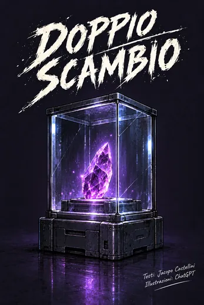
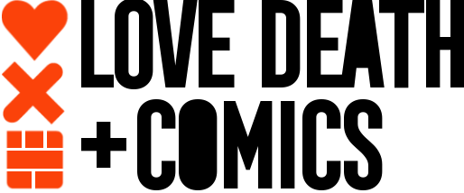
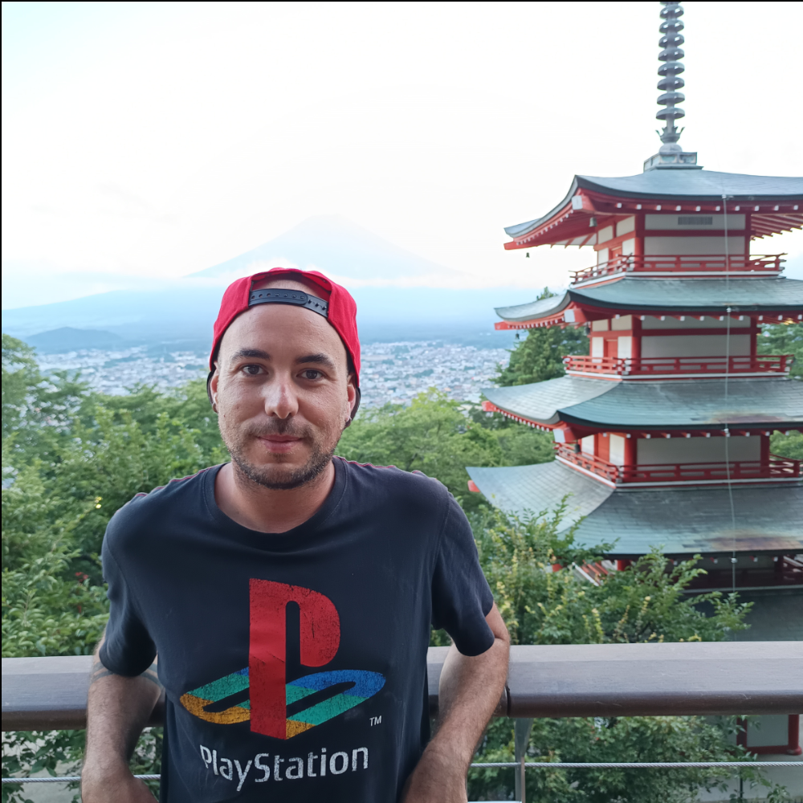
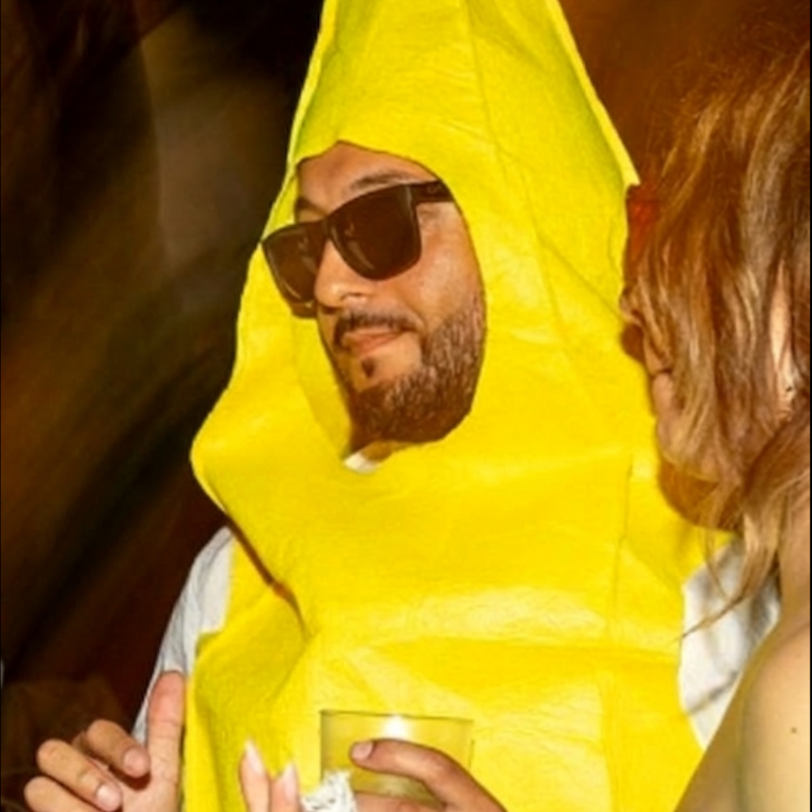
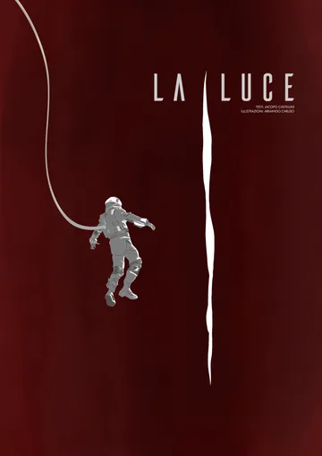

Chi Siamo

Io sono Jacopo, la penna dietro questi brevi racconti, nonché la mano dietro questo sito. Qualcuno mi direbbe un'anima inquieta in cerca di una via per esprimere sè stesso in questo pazzo pazzo mondo, altri invece uno sfaticato pronto a cogliere ogni possibile scusa per non adempiere ai propri doveri lavorativi. Io personalmente direi un mix di entrambe le cose, con in più una certa tendenza all'escapismo tipica di chi per troppo a lungo ha frequentato i mondi altrui come sottoinsieme del proprio. Di giorno costruisco le intelligenze artificiali che ci rimpiazzeranno (si, giuro che faccio questo di lavoro!), di notte le saboto silenziosamente con l'unica cosa che non riusciranno mai a sottrarci. No, non la fantasia, quella ce l'hanno rubata da un pezzo: intendo la voglia di esprimerla. Non ho mai scritto nulla di più complesso della lista della spesa finora, quindi abbiate pazienza con me: le immagini mi si accalcano in testa, e non è sempre facile farle uscire di lì. Alcune sanno aggrapparsi molto bene!
Sono Armando, parlo poco, faccio cose. A volte mi capita di lavorare. Potrei definirmi architetto, ma solo tra la pausa pranzo e la pausa caffè. Nel tempo libero cerco di dare il meglio di me sovrapponendo alla realtà le immagini colorate che affiorano nella mia mente. È così che nascono le amicizie, le collaborazioni e le cose belle della vita.Uscite Recenti
